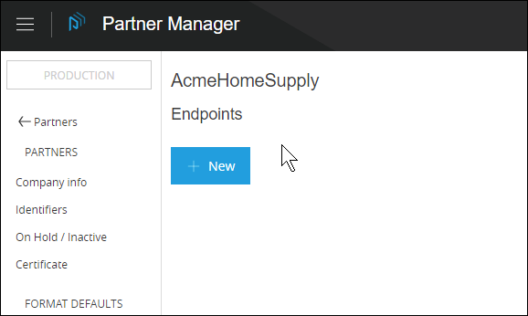
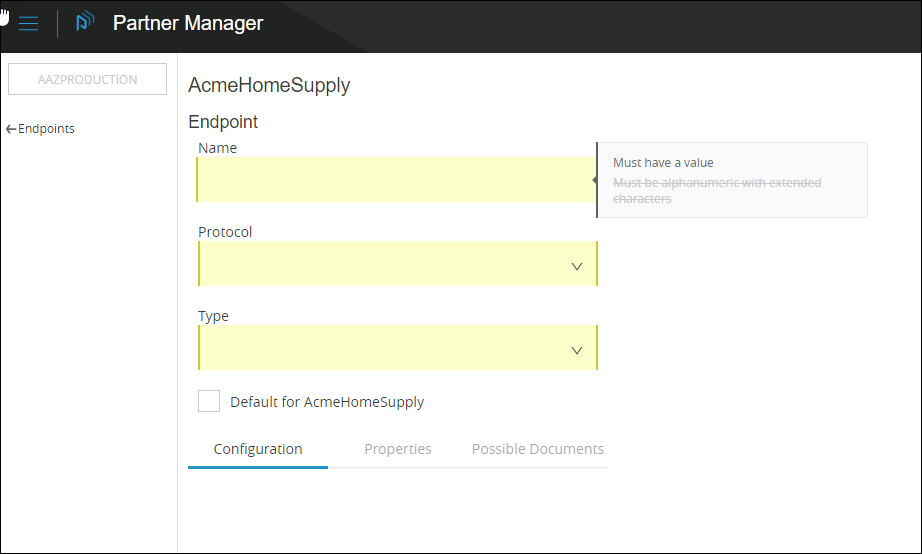

Endpoints
An endpoint is the entry point to a service, a process, or a queue or topic destination in service-oriented architecture. In PortX, an endpoint defines the protocol, address, and other details specific to an exchange of messages between partners.
Get Started
-
Start Trade Route. The Transaction Monitoring Page appears.
-
In the left-hand navigation pane, click Partner Configuration. The Partner Configuration Page appears.
To edit or add settings for your company, in the Name table, click the name of your company.
To edit or add settings for an existing trading partner, in the Name table, click the name of the partner.
The Company Information Page appears.
-
In the CONFIGURATION section of the left-hand navigation pane on the Company Information Page, click Endpoints.
The Endpoints Page appears.
Figure 1. Endpoints Page -
From this page, you can:
Edit an Existing Endpoint
-
On the Endpoints Page, in the Name column, click the endpoint you want to edit.
The Endpoint Page appears. The settings that appear depend on the values for Protocol and Type.
 Figure 2. Endpoint Page
Figure 2. Endpoint Page -
To edit the Endpoint Name, Protocol, or Type, go to Choose Endpoint Name, Protocol, and Type.
To edit settings specific to the existing Name, Protocol, and Type, go to the appropriate Protocol-Type combination in [Protocol/Type-Specific Endpoint Settings ].
Add a New Endpoint
-
On the Endpoints Page, click New.
The Add New Endpoint Page appears.
Figure 3. Add New Endpoint Page -
Go to Choose Endpoint Name, Protocol, and Type.
If you are working with other partners, you can change an existing endpoint, but you cannot add a new endpoint.
Choose Endpoint Name, Protocol and Type
-
On the Add New Endpoint Page, enter the appropriate settings.
When you have entered settings for Name, Protocol and Type, the Add New Endpoint Page becomes the Endpoint Page.
For information about Protocol- and Type-specific settings, go to the corresponding section in To Enter Protocol/Type-Specific Endpoint Settings.
Setting Description Name
Name for this endpoint
- Required
-
Yes
- Default
-
Auto-populates based on the following values:
-
Company name (see Partners and Company Information)
-
Protocol
-
Type
-
If you choose to change the default, then subsequently want to revert to it, click Auto Fill.
Protocol
Protocol for this endpoint
- Required?
-
No
- Valid values
-
-
'AS2'
-
'FTP'
-
'FTPS'
-
'SFTP'
-
'HTTP'
-
'JMS'
-
'SMTP'
-
'POP3'
-
'IMAP'
-
'RNIF'
-
- Default
-
None
Type
Type of endpoint
- Required?
-
No
- Valid values
-
-
'SEND'
-
'RECEIVE'
-
- Default
-
None
Default for partner checkbox
Select this box if you want the choices you make for this endpoint to apply to all endpoints for this partner.
When you have entered settings for Name, Protocol and Type, additional settings specific to the protocol-type combination appear; the Add New Endpoint Page becomes the Endpoint Page. For information about the additional settings, go to the appropriate Protocol-Type combination in To Enter Protocol/Type-Specific Endpoint Settings.
Figure 4. Endpoint Page
Protocol/Type-Specific Endpoint Settings
For a given endpoint, the values you select for Protocol and Type determine which additional settings appear. These additional settings are a subset of the settings provided in the corresponding Anypoint Connector.
To Enter Protocol/Type-Specific Endpoint Settings
Choose the section that corresponds to the Protocol-Type of the Endpoint for which you are entering settings.
To Add an Endpoint Property
-
Click Add Endpoint Property.
The Add Property box appears. Refer to the table that follows for adding property settings.
Setting Description Property Type
Dropdown listbox that includes types of properties you can track
- Required?
-
Yes
- Default
-
None
Property Source Type
Dropdown listbox that includes valid sources of trackable properties
- Required?
-
Yes
- Valid values
-
Inbound PropertiesOutbound PropertiesConstantMEL Expression - Default
-
None
Property Source
Identifies source for this property
- Required?
-
Yes
- Valid values
-
-
Valid XPath expression (for XML documents)
-
Valid JSONPath expression (for JSON or EDI documents)
-
include::/_sources/endpoint-as2-send.adoc[] include::/_sources/endpoint-as2-receive.adoc[] include::/_sources/endpoint-ftp-send.adoc[] include::/_sources/endpoint-ftps-send.adoc[] include::/_sources/endpoint-ftps-receive.adoc[] include::/_sources/endpoint-sftp-send.adoc[] include::/_sources/endpoint-sftp-receive.adoc[] include::/_sources/endpoint-http-send.adoc[] include::/_sources/endpoint-http-receive.adoc[] include::/_sources/endpoint-jms-send.adoc[] include::/_sources/endpoint-jms-receive.adoc[] include::/_sources/endpoint-smtp-send.adoc[] include::/_sources/endpoint-pop3-receive.adoc[] include::/_sources/endpoint-imap-receive.adoc[] include::/_sources/endpoint-rnif.adoc[]